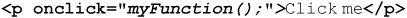
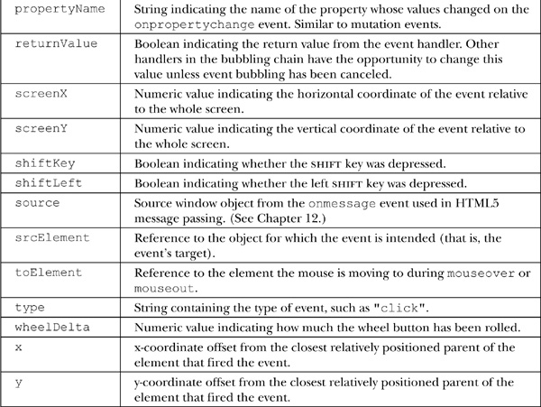
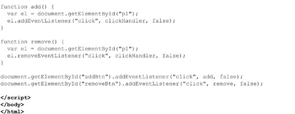
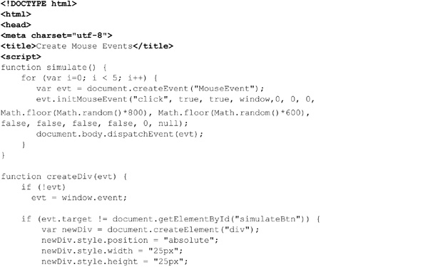
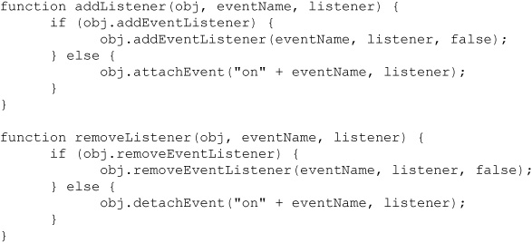

Browsers have the ability to invoke JavaScript in response to browser events or user actions within a Web page. For example, it’s possible to specify JavaScript that is to be run whenever a page loads or when a user clicks a particular link or modifies a form field. The actions to which JavaScript can respond are called events. Events are the glue that brings together the user and the Web page; they enable pages to become interactive, responsive to what a user is doing. An event model defines the ways the events are processed and how they are associated with the various document and browser objects.
Like many other aspects of JavaScript, the event models of major browsers predictably evolved in separate, incompatible directions. Early browsers supported a limited event model, but by the fourth generation the major browsers completely revamped their respective event handling systems. However, because of the divergent nature of these event models, the W3C once again entered the fray by including a standard event model in DOM2. This model extends the DOM to include events, marrying the two incompatible models to produce a powerful, robust environment for event handling. Today, the event models are closer than in the past, but the DOM continues to evolve and the old ways are still widely used. Thus, we begin this chapter with the basic approach to events and continue on to the more modern approach to event handling.
An event is some notable action to which a script can respond. The browser may trigger some events such as page loading, but most often they are initiated by user interactions such as when they click, use a form widget, or even move the mouse over some page element. An event handler is JavaScript code associated with a particular part of the document and a particular event. A handler is executed if and when the given event occurs at the part of the document to which it is associated. For example, an event handler associated with a button element could open an alert dialog when the button is clicked, or a handler associated with a form field could be used to verify the data the user entered whenever the value of the form field changes.
Events are named in a descriptive manner. It should be easy to deduce what user action the events click, submit, and mouseover correspond to. Some events may not be immediately intuitive; for example, blur, which indicates that a field or object has lost focus, in other words is not active. Traditionally, the handler associated with a particular action is named with the event name prefixed by “on.” For example, a handler for the click event is called onclick.
Events are not limited to basic user actions associated with the document, such as click and mouseover. For example, browsers support events such as resize, load, and unload, which are related to window activity such as resizing the window or loading or unloading a document.
Browsers provide detailed information about the event occurring through an Event object that is made available to handlers. The Event object contains contextual information about the event, such as the exact x and y screen coordinates where some event occurred, whether modifiers such as the shift key were depressed at the time of the event, and so on.
Events that are the result of user actions typically have a target —the HTML element at which the event is occurring. For example, a click event’s target would be the element, such as <img> or <p>, that the user clicked on. Event handlers are therefore bound to particular DOM elements. When the event that a handler handles occurs on the element to which it is bound, the handler is executed. We should note that event handlers don’t necessarily have to be directly bound to the element that an event occurs on; in fact, we’ll discover that events generally move through containing elements, so there are a multitude of places within a DOM tree where an event may actually be handled. For now, we stick with the basics.
Handlers can be bound to elements in numerous ways, including:
• Using traditional HTML event handler attributes directly in markup. For example: 
• Using script to set handlers to be related to an object. For example:
• Using proprietary methods such as Internet Explorer’s attachEvent() method. For example:
• Using DOM methods to set event listeners using a node’s addEventListener() method. For example:
Just as there are many ways to bind events to elements, there are several ways events are triggered:
• Implicitly by the browser in response to some user- or JavaScript-initiated action
• Explicitly by JavaScript using DOM1 methods. For example:
• Explicitly using proprietary methods such as Internet Explorer’s fireEvent() method
• Explicitly by JavaScript using the DOM2 dispatchEvent() method
Compared to some aspects of JavaScript, the event models of the past have lived on because, until the introduction of Internet Explorer 9, proprietary event handling was still required. Even now that modern DOM event handling has become widespread, we still find that some aspects of the traditional event system can be easier to apply in some instances. Given the likelihood of encountering both old and Internet Explorer–specific syntax, we present the traditional and proprietary event models before getting to modern DOM event management.
NOTE We will not cover the Netscape event capture methods, as that browser and its event syntax are no longer relevant.
Before discussing modern event models, let’s discuss the basic event model common to even the oldest JavaScript-supporting browsers. The basic model is simple, widely supported, and easy to understand. At the same time it has sufficient flexibility and features that it is enough for most developers in the course of day-to-day programming tasks. Thankfully, proprietary browser event models and the newer DOM2 model are compatible with this basic model. This means that you can stick to the basic model even in the most recent browsers.
HTML5 supports core event bindings for most elements. These bindings are element attributes, such as onclick and onmouseover, which can be set equal to the JavaScript that is to be executed when the given event occurs at that object. As the browser parses the page and creates the document object hierarchy, it populates event handlers with the JavaScript code bound to elements using these attributes. For example, consider the following simple binding that defines a click handler for a paragraph element:
While it may not look clickable, you can click the paragraph element and see the alert triggered:
We remind readers that the attribute onclick is not JavaScript; it is markup that relates to the event handler onclick. As markup, the attribute may be case sensitive under XHTML and not in standard HTML. In fact, quite often we see Web developers write the attribute in mixed case as onClick. While this may aid readability, showing the interface between markup and script, readers are encouraged to put their event handler attributes in all lowercase.
Core Event Attributes from HTML4
Under HTML4, there were a number of core event handling attributes defined for all elements and a few that were defined for forms and the page itself. Table 11-1 presents these attributes.
Table 11-1 W3C-Defined Core Events under HTML4
The following example, the result of which is shown in Figure 11-1, illustrates these events in action.
Figure 11-1 Simple event handler example
ONLINE http://javascriptref.com/3ed/ch11/coreeventattrs.html
For completeness, we should note that under Internet Explorer’s Jscript there is a nonstandard way to bind events within markup. The most common syntax is using a <script> tag with a for attribute indicating the id of the element to which the script should be bound, and the event attribute indicating the handler:
This syntax is not a part of any known standard, and browser support outside of Internet Explorer is spotty at best. For these reasons, developers should definitely stay away from this syntax; we’ve discussed it here only so you can educate your peers about its restrictions in case you see it in use.
The HTML5 specification introduces a multitude of event handlers that can be accessed as attributes or within code, as we’ll see later. Many of these events were defined by Microsoft in Internet Explorer and later made standard under the emerging specification, while others are all new with HTML5. Table 11-2 summarizes HTML5’s core event attributes found on all elements as of the time of this edition’s writing. Table 11-3 adds a few more events, which are found on the <body> and <frameset> tags.
Table 11-2 HTML5 Element Core Events Preview
Table 11-3 HTML5 Events for <body> and <frameset> Preview
While you can bind event handlers to parts of a document using event attributes in markup, it is generally much more appropriate to bind them within JavaScript instead, especially if you wish to add or remove handlers dynamically. Further, doing things in code tends to improve the separation between the structure of the document and its logic and presentation.
To use JavaScript for this task, it is important to understand that event handlers are accessed as methods of the objects to which they are bound. For example, to set the click handler of an element, set its onclick property to the desired code:
NOTE As we’ve mentioned, the names of event handlers in JavaScript are always all lowercase. This marks one of the few exceptions to the rule that JavaScript properties are named using the “camel-back” convention (and reflects XHTML’s requirement for lowercased attributes as well).
Of course, you do not have to use an anonymous function when setting a handler. For example, notice here how we set a mouseover handler to an existing function:
Regardless of how the function used is defined, you must make sure to register the event handler after the HTML element has been added to the DOM tree; otherwise, you’ll cause a runtime error by trying to set a property (an event handler) of a nonexistent object. One way to ensure this is to assign handlers after the window’s onload handler fires:
Of course, you might try to rely simply on placing the script after the element in question, but this is a bit dangerous since you are relying on how you assume a browser works and, more troubling, assuming the code or markup will never be moved in the future. It’s always better to think defensively when you bind event handlers.
NOTE For performance reasons, waiting until the entire document is loaded to bind events may be somewhat too conservative; instead, using an event listener for DOMContentLoaded can be employed.
One thing to note about the traditional DOM Level 0 form of event binding is that only a single function can be associated with an event, and it is quite possible to overwrite an existing value. For example, imagine if you tried to bind two functions to the same click event for an element:
Only the second alert would be shown because its event handler function overwrote the first:
A contrived fix for our simple example would be to create a new function that called both the handlers and to use the new function instead:
Of course, maybe this isn’t so contrived at all. It should suggest that it is quite possible to create a wrapper function that checks whether the event handler is already defined for a function and, if it is, then adds a new function that calls the old one as well as the newly associated event. We illustrate this here with our running example, and note that it is the same idea as the safe onload event handler discussed in Chapter 1:
ONLINE http://javascriptref.com/3ed/ch11/oldmultieventbind.html
The previous example is merely illustrative of how difficult working with the old event model can be. Fortunately, we will show shortly that with the DOM’s addEventListener() method there is both an easier and more appropriate way to associate multiple event listeners to an element. However, it is interesting to us that there is a valuable side effect of employing the old event binding style—hyperawareness of bound events. Not knowing what event handlers are bound to what elements has led to all sorts of chaos in Web development, from memory leaks to very unsafe programming practices. Remember, the Web is a very unsafe place, and just copying or linking to scripts and letting them bind to arbitrary page aspects is a dangerous, although common, practice. Forced awareness of what events are associated with what elements in this light doesn’t seem half bad.
In a browser, a script’s execution context is normally the Window in which the script’s text is found. However, script included in the text of an event handler has the context of the object to which it is bound. Instead of the this object pointing to the Window, it points to the object representing the element. Given the following script:
mousing over the paragraph results in the following dialog:
An important subtlety is that it is only the JavaScript found in the text of the event handler attribute that has this scope; any JavaScript it calls has the “normal” scope. For example:
The result is the standard Window scope, as shown here:
If your handlers are defined within <script> tags and need access to the element at which the event occurs, simply pass them the this value from the handler:
We’ll see later that we do not have to bind events like this nor pass around their context, as we can instead rely on the properties of the Event object to find out the particular details of an event.
A very useful feature of traditional element-placed event handlers is that their return values can affect the default behavior of the event. The default behavior is what would normally happen when the event occurs if left unhandled. For example, the default behavior of a click on a link (<a> tag) is to load the link target specified in the href attribute in the browser. The default behavior of activating a submit button is the submission of the form. The default behavior of a reset button is to clear form field values, and so on.
To cancel the default behavior of an event, simply return false from its event handler. For example, to kill a link load, we return false:
In this example, with JavaScript on, you never leave the page. Of course, more likely you aren’t going to do this, but you might imagine something like a confirmation:
When a user clicks the link, the confirm dialog is fired:
A positive response to confirm() returns true, and the default action of page loading occurs. A false response cancels the link load.
Probably the most common use of default actions is to enable form validation. In this case, when the submit handler is returned false, a form will not submit. For example, here some custom function validateForm() is called, and if it returns false the submission is canceled:
Like the link, when a submit handler for a form returns false, the form submission is canceled. This pseudo-code is meant to show just one possible use of event handlers and return values controlling default actions. The same effect can be reached when directly binding event handlers through JavaScript:
If the click1 function returns false, then the default click behavior will be canceled.
Table 11-4 lists some useful events and the effects of their return values.
Table 11-4 Common Event Handlers and Default Actions

Under the traditional event model, it is possible to invoke events directly on certain objects with JavaScript. Doing so causes the default action for the event to occur. For example, this script fires a click on the button, automatically triggering an alert:
The events and the elements on which they can be directly invoked are shown in Table 11-5. Since browsers extended the traditional model, your browser may support other manual event trigger methods, but those listed in Table 11-5 are the minimum that you will typically encounter. We’ll explore the more modern method for programmatically creating and invoking methods a bit later in the chapter.
Table 11-5 Traditional Event Dispatch Methods
Event handlers bound via HTML attributes or explicitly with JavaScript are generally available to scripts in modern browsers, just like any other method of the object. For example:
Before wrapping up the discussion of the traditional model, we should alert readers to one common pitfall when invoking events directly on forms. The submit() method does not invoke the form’s onsubmit handler before submission. In the following example, the first two buttons will trigger both onclick and onsubmit handlers; the last will not show any sense of the submit button being pressed or the onsubmit handler being called and will simply submit to the URL specified in the action attribute:
ONLINE http://javascriptref.com/3ed/ch11/submitdetails.html
If you want to programmatically use the submit() method, understand that you will need to perform any validations yourself before triggering the event.
The traditional event model works well for simple tasks such as form validation but leaves a lot to be desired if you wish to safely interact with other scripts or build a Web application. The shortcomings of the traditional model are numerous. First off, with the basic model, no extra information about the event is passed to the handler save that the event occurred. Second, in the traditional model, there is no easy way for event handlers in different parts of the object hierarchy to interact. Third, you are limited to firing events manually on those elements that provide event methods (like click()). Finally, the traditional model simply doesn’t play well with other scripts. Direct binding of events in markup or script makes it quite easy to overwrite an existing handler.
Modern event models were introduced with the 4.x generation of browsers. We might dub this generation of event models the “DHTML event model,” and it, of course, has two divergent implementations. The Netscape 4.x model had events begin at the top of the hierarchy and “trickle” down to the object at which they occurred, affording enclosing objects the opportunity to modify, cancel, or handle the event. Under Internet Explorer, events begin at the object where they occur and “bubble” up the hierarchy. Under DOM2, events can trickle down and bubble up, as shown here:
Netscape introduced an event routing model characterized by the captureEvents() and releaseEvents() methods. Microsoft supported an event bubbling model characterized by the attachEvent() and detachEvent() methods. The DOM Level 2 event specification brings the event capture and bubble concepts together and standardizes the syntax with the addEventListener() and removeEventListener() methods. The scope of the Event object, how default events are controlled, and other event management details also differ between the various event models. To bring this together, an overview of the event models over time and their related syntax is summarized in Table 11-6.
Table 11-6 Overview of Event Models over Time
We have used the traditional model throughout the book, especially in simple examples. We still find that for many tasks it is quite appropriate. We will focus primarily on the DOM method shortly, but we must acknowledge that the Internet Explorer model was and still is commonly used, so we present its syntax with some detail next.
While the Netscape 4.x event syntax is long regulated to the dustbin of Web development history, a proprietary Internet Explorer event syntax lived on until Internet Explorer 9 fully supported the DOM event syntax. We start our discussion with this proprietary syntax and then demonstrate how to roughly patch the concerns between the Microsoft and DOM models until such a time as the DOM syntax becomes ubiquitous.
Rather than using an HTML attribute to bind events, modern event management is generally handled in code. Internet Explorer provides the attachEvent() method with the following syntax:
Here, the first parameter is a string such as “onclick”, and eventHandler is the function that should be invoked when the event occurs. The return value is a Boolean indicating whether the attachment was successful. The following simple example shows how easy it is to bind two handlers to the same object under older Internet Explorer browsers. It is interesting to note that the execution order is defined as “random,” so it is essential that one function not rely on the prior execution of the other:
ONLINE http://javascriptref.com/3ed/ch11/attachevent.html
To remove a handler using this Internet Explorer–specific syntax, use detachEvent() with the exact same arguments:
This requirement does pose a bit of a problem because the previous example used anonymous functions, so you would need to use a named function to easily remove attached events:
ONLINE http://javascriptref.com/3ed/ch11/detachevent.html
Under the proprietary Internet Explorer event model, the browser creates a transient Event object and makes it available to the appropriate handler. Unlike other event models in which the object is passed to the handler, the object in Internet Explorer is implicitly made available as the global variable event. The most useful properties of the object are listed in Table 11-7.
Table 11-7 Properties of Internet Explorer’s Event Object

Since the Event object is implicitly available everywhere, there’s no need to pass it to a handler bound with JavaScript. For example, if you had some bound event handler function called clickHandler, it could look at properties of the Event object quite directly:

To explore the various aspects of the Event object under Internet Explorer, use the following simple example, the result of which is shown in Figure 11-2:
Figure 11-2 Exploring Internet Explorer’s Event object
ONLINE http://javascriptref.com/3ed/ch11/eventattributesIE.html
Shortly, we’ll see that there is some good news here with events in that the Internet Explorer way of doing things isn’t completely divergent from the DOM method, so we can write a handler that addresses both. For now, let’s continue our tour of this proprietary event system.
The flow of events in Internet Explorer was the opposite of the Netscape model. Most events begin at the object at which they occur and bubble up the hierarchy. Bubbling events give the appropriate handler at each level in the hierarchy the opportunity to handle, redirect, or pass the event along up the tree. Bubbling events proceed up to the Document, but there they stop (that is, they don’t propagate up to the Window).
Some events that have specific, well-defined meanings, such as form submission and receiving focus, do not bubble. Whereas bubbling events work their way up the tree, causing the appropriate handler to be invoked at each level in the hierarchy until they reach the top or are canceled, nonbubbling events invoke the handler only of the object at which they occur. The rationale is that such events do not have well-defined semantics at a higher level in the hierarchy, so they should not be propagated up the tree. In the case where an event does bubble but we may not want it to, we can cancel it so its upward progress is halted in script. We’ll see how to do this in a moment, but for now, to illustrate event bubbling in action, consider the following example. Handlers for clicks are defined for many objects in the hierarchy, and each writes the name of the element to which it is attached into the paragraph with the id of results:
ONLINE http://javascriptref.com/3ed/ch11/iebubble.html
Clicking the bold text causes a click event to occur at the <b> tag. The event then bubbles up, invoking the onclick handlers off of objects above it in the containment hierarchy. The result is shown in Figure 11-3.
Figure 11-3 Internet Explorer event bubbling example
You can stop events from propagating up the hierarchy by setting the cancelBubble property of the Event object. This property is false by default, meaning that after a handler is finished with the event, it will continue on its way up to the next enclosing object in the hierarchy. Setting the cancelBubble property to true prevents further bubbling after the current handler has finished. For example, you could prevent the event from getting beyond the <b> tag in the last example by making this small modification:
We should note a few things, though. First, not all events are cancelable. Second, we should point out that returning false from a handler (or setting event.returnValue to false) prevents the default action for the event but does not cancel bubbling. Later handlers invoked by the bubbling behavior will still have a chance to handle the event, and any value they return (or setevent.returnValue to) will “overwrite” the value set or returned by a previous handler. Conversely, canceling bubbling does not affect the event’s return value. Because the default returnValue of an event is true, you need to be sure to return false or set returnValue to false if you wish to prevent the event’s default action.
Events bubble up strictly through objects in the hierarchy that contain them. There is, however, a primitive way to redirect to another object in pre-DOM event-supporting browsers such as Internet Explorer 5.5–8. Each object has a fireEvent() method that transfers the event to the object on which it is invoked:
The first argument is a string denoting the handler to fire, such as “onclick”. The optional eventObject parameter is the Event object from which the new Event object will be created. If eventObject is not given, a brand-new Event is created and initialized as if the event had really occurred on the target object. If eventObject is specified, its properties are copied into the new Event object, except for cancelBubble, returnValue, srcElement, and type. These values are always initialized (respectively) to false, true, the element on which the event is firing, and the type of event given by the first argument to fireEvent().
One major downside of this method is that its invocation causes a new Event to be created, so the reference to the original target (event.srcElement) is lost during the handoff.
The following code fragment illustrates the method:
When set as a click handler, the preceding function redirects the event to the first image in the page.
Remember to cancel the original event before redirecting to another object; failing to do so “forks” the event by allowing it to continue on its way up the hierarchy while adding the new event created by fireEvent() to the event queue. The new event will be fired only after the original event has finished bubbling.
Under the basic event model, you could simulate events by invoking event handlers directly as well as implicitly creating a few “real” events by invoking methods such as submit() and focus(). Internet Explorer 5.5 introduced the first method for creating actual Event objects. The syntax of the Internet Explorer event creation is shown here:
This createEventObject() method of the Document object returns an Event object, cloning the eventObjectToClone argument if one exists. You can set the properties of the newly created Event object and cause the event to occur on an object of your choice by passing it as an argument to fireEvent().
ONLINE http://javascriptref.com/3ed/ch11/eventsIE.html
At first, it might seem curious why you would want to simulate events. There are many reasons you may want to do this, however, and test automation comes to mind quickly.
NOTE Internet Explorer (especially versions 5.5–8) provides more event-related features than we’ve covered here. Most of these features involve the proprietary Internet Explorer event handlers. To learn more, visit http://msdn.microsoft.com.
The DOM2 Event model specification (http://www.w3.org/TR/DOM-Level-2-Events/) describes a standard way to create, capture, handle, and cancel events in a tree-like structure such as an XHTML document’s object hierarchy. It also describes event propagation behavior—that is, how an event arrives at its target and what happens to it afterward.
The DOM approach to events accommodates the basic event model and marries important concepts from the proprietary models. This essentially means that the basic event model works exactly as advertised in a DOM event-supporting browser. Also, everything that you can do in older browsers you can do in a DOM-compliant browser, but the syntax is different. Today most browsers support this model, though it did take until Internet Explorer 9 to see DOM event support from Microsoft.
The hybridization of the proprietary models is evident in how events propagate in a DOM event-supporting browser. Events begin their lifecycle at the top of the hierarchy (at the Document) and make their way down through containing objects to the target. This is known as the capture phase because it mimics the behavior of the old Netscape 4 browser. During its descent, an event may be preprocessed, handled, or redirected by any intervening object. Once the event reaches its target and the handler there has executed, the event proceeds back up the hierarchy to the top. This is known as the bubbling phase because of its obvious connections to the Internet Explorer model.
The easiest way to bind event handlers to elements under DOM Level 2 events is to use HTML attributes such as onclick, which you should be familiar with by now. Nothing changes for DOM event-supporting browsers when you bind events in this way, except that only support for events in the HTML standard is guaranteed (though some browsers support more events).
Because there is no official way in DOM2 for script in event handler attribute text to access an Event object, the preferred binding technique is to use JavaScript. The same syntax is used as with the basic event model:
Notice in this example how the handler accepts an argument. DOM2 browsers pass an Event object containing extra information about the event to handlers. The name of the argument is arbitrary, but event, e, and evt are most commonly used. We’ll discuss the Event object in more detail in an upcoming section.
You can also use the addEventListener() method introduced by DOM2 to engage an event handler in a page. There are three reasons you might wish to use this function instead of directly setting an object’s event handler property. The first is that it enables you to bind multiple handlers to an object for the same event. When handlers are bound in this fashion, each handler is invoked when the specified event occurs, though the order in which they are invoked is arbitrary. The second reason to use addEventListener() is that it enables you to handle events during the capture phase (when an event “trickles down” to its target). Event handlers bound to event handler attributes such as onclick and onsubmit are invoked only during the bubbling phase. The third reason is that this method enables you to bind handlers to text nodes, an impossible task prior to DOM2.
The syntax of the addEventListener() method is
where:
• object is the node to which the listener is to be bound.
• event is a string indicating the event it is to listen for.
• handler is the function that should be invoked when the event occurs.
• capturePhase is a Boolean indicating whether the handler should be invoked during the capture phase (true) or bubbling phase (false).
For example, to register a function changeColor() as the capture-phase mouseover handler for a paragraph with an id of myText, you might write the following:
To add a bubble phase handler, simply change the final value to false:
A simple example is shown here:
ONLINE http://javascriptref.com/3ed/ch11/addeventlistener.html
Handlers are removed using removeEventListener(), with the same arguments given when the event was added. So, to remove the first handler in the previous example (but keep the second), you would execute the following code:
A simple example of adding and removing events using the DOM methods is shown here:

ONLINE http://javascriptref.com/3ed/ch11/removeeventlistener.html
As previously mentioned, browsers supporting DOM events pass an Event object as an argument to handlers. This object contains extra information about the event that occurred, and is, in fact, quite similar to the Event objects of older proprietary models. The exact properties of this object depend on the event that occurred, but all Event objects have the read-only properties listed in Table 11-8.
Table 11-8 Event Object Properties
An example to explore the DOM Event object similar to the one earlier in the chapter is presented here and can be found online.
ONLINE http://javascriptref.com/3ed/ch11/eventattributes.html
As with more traditional models, DOM Level 2 allows you to cancel the default action associated with an event by returning false from a handler. It also provides the preventDefault() method of Event objects. If, at any time during an event’s lifetime, a handler calls preventDefault(), the default action for the event is canceled. This is an important point: if preventDefault()is ever called on an event, its default action will be canceled; even other handlers returning true cannot cause the default action to proceed.
The following simple example prevents clicks anywhere in the document from having their intended effect:
If later we want to understand whether this method has been called, the defaultPrevented property is set in the Event object. You might wonder how that would ever be useful if we have killed the event’s default. Understand that we aren’t killing the event with this method, nor are we keeping it from continuing on its voyage through the document object hierarchy. Consider the idea of adding a click handler to all of the elements in the tree that outputs which element receives the click event, like so:
When the link is clicked, its default action is canceled by killClicks(), but as you can see here the event still propagates through the tree:
This example clearly illustrates the fact that event propagation through the document object hierarchy is independent of whether the event’s default action has been canceled.
As mentioned earlier, we can control the direction of event flow when we set our listeners. The previous example passed a false value to the event bind and the event bubbled, but we can also have it go the other direction by using a true value:
If we do that, we see that the event progress acts a bit differently, moving from document down the tree to the event source:
While it seems straightforward enough, listening for events in the capture and bubbling phases can be a tricky business because of the parent-child relationship of nodes in the DOM. A handler will be invoked for an event only if the event is targeted for a node that is in the subtree rooted at the node to which the listener is attached. Because containment relationships for different parts of the page often change, many programmers find it convenient to capture events at a major object they know will contain the objects of interest, such as at the Document or Form level.
If, at any point during an Event’s lifetime, a handler invokes its stopPropagation() method, the event ceases its motion through the document object hierarchy and expires after all handlers bound to the current object have executed. That is, when stopPropagation() is called, the only handlers that will further be invoked are those bound to the current object. The following simple example shows killing the event as it bubbles up from the link:
ONLINE http://javascriptref.com/3ed/ch11/stoppropagation.html
The DOM Event specification allows for synthetic events to be created by the user using document.createEvent(). You first create the type of event you want, say an HTML-related event:
Then, once your event is created, you pass it various attributes related to the event type. Here, for example, we pass the type of event “click” and Boolean values indicating that it is “bubble-able” and cancelable:
Finally, we find a node in the document tree and dispatch the event to it:
The event then is triggered and reacts as any other event. A simple example here shows how we create a click event when another object is rolled over and then dispatch that click to a node with an appropriate handler:
ONLINE http://javascriptref.com/3ed/ch11/createevent.html
NOTE Internet Explorer versions prior to 9 use proprietary event creation syntax; see the section covering this syntax earlier in the chapter.
In the previous example, the event was initiated with the document.createEvent function. In the DOM4 Core specification, a more natural way to create events was introduced using constructor syntax. The constructor takes two arguments. The first is a string indicating the event name to create. The second is an object that contains the details about the event. This is improved on from the previous syntax, as it doesn’t require a fixed order for the arguments. Instead of the three lines it previously took to dispatch an event, only two lines are needed with the new syntax:
The functionality remains the same. Though this has been quickly implemented by some browsers, at the time of this writing it is not covered by all, so be sure to check support before implementing.
ONLINE http://javascriptref.com/3ed/ch11/createevent-constructor.html
Given that events might be user triggered or synthetic, we might like to tell the difference. Events generated by a browser or a direct user action are deemed trusted and will have an isTrusted value of true on their Event object. Synthetic events are triggered by code, typically using createEvent(). Since they are code created, it is possible that these events are the result of malicious code, so they have an isTrusted value of false. A simple example to demonstrate the setting of this property is shown here:
ONLINE http://javascriptref.com/3ed/ch11/istrusted.html
Readers should be quite careful about relying on this property. If malicious JavaScript is injected in a page via an XSS exploit or another scheme, it may be able to remove any script checks of the isTrusted property. Ultimately, the client-side must be deemed untrustworthy if Web application security is to be achieved.
At this point, we could go and enumerate the various types of events to be created, but there is, in fact, a fair bit of complexity to making events because events can be quite different. Because of the syntax diversity, at this point it makes sense to discuss the various event types a bit more closely, including how they may be created synthetically.
In this section, we cover the various events available in most browsers. We’ll present as much of both DOM-specified and emerging events as possible, but will avoid too much detail on those events that are dying out or purely speculative in their syntax.
The mouse events defined by DOM2 and 3 under the MouseEvent interface are most of those from the standard DOM model from HTML 4, though two nonbubbling events for mouse hovering (mouseenter and mouseleave) have been added. Mouse events are listed in Table 11-9.
When a mouse event occurs, the browser fills the Event object with properties describing screen position (clientX, clientY, screenX, screenY), which button was pressed (button), and the number of times it was pressed (detail). The following simple example shows mouse events in action:
ONLINE http://javascriptref.com/3ed/ch11/mouseevents.html
To synthetically create a mouse event, use code such as
However, because there are many other aspects to mouse events, initialization of them can be a bit involved. The syntax of this method is
where
• type is a string representing the particular mouse event to create, such as “mouseout”, “mousemove”, and so on.
• bubbles is a Boolean value indicating whether or not the event should bubble.
• cancelable is a Boolean value indicating whether or not the event should be cancelable.
• view is the event’s AbstractView. You should pass the Window object here.
• detail indicates how many times a mouse button is pressed.
• screenX is the horizontal screen position of the mouse event.
• screenY is the vertical screen position of the mouse event.
• clientX is the horizontal position of the event relative to the window.
• clientY is the vertical position of the event relative to the window.
• ctrlKey is a Boolean value indicating whether or not the CTRL key was pressed.
• altKey is a Boolean value indicating whether or not the ALT key was pressed.
• shiftKey is a Boolean value indicating whether or not the SHIFT key was pressed.
• metaKey is a Boolean value indicating whether or not the META key was pressed.
• button is a numeric value indicating which mouse button was used (0 for left, 1 for middle, and 2 for right).
• relatedTarget is a DOM node reference related to the event; for example, on a mouseover it references the node the mouse is leaving. If not used, null is passed.
Once an event is made, it is issued using the dispatchEvent() method. A simple example here, the result of which appears in Figure 11-4, shows how we might dispatch a click event:
Figure 11-4 Create blue boxes with synthetic clicks

ONLINE http://javascriptref.com/3ed/ch11/createmouseevents.html
In addition to the traditional mouse events, it is also possible to capture the scrolling of the mouse wheel. This event has been notoriously inconsistent and varies between browsers and even browser versions. Most browsers now support the mousewheel event, though Firefox requires the use of the DOMMouseScroll or the MozMousePixelScroll. When inspecting the Event object, it is possible to find out how far the page has been scrolled. In general, this can be found set in pixels via the event.details property. However, in older versions of Internet Explorer, it is necessary to view the event.wheelDelta property. When using DOMMouseScroll in Firefox, the value will be the number of lines scrolled. It is necessary to use MozMousePixelScroll to see the number of pixels.
ONLINE http://javascriptref.com/3ed/ch11/mousewheel.html
The DOM Level 3 specification groups a variety of events in the category of “UI event.” These events are listed in Table 11-10.
To create a “UI event” synthetically, use the following:
Then initialize the event:

• type is a string representing the particular event to create, such as “DOMFocusIn”.
• bubbles is a Boolean value indicating whether or not the event should bubble.
• cancelable is a Boolean value indicating whether or not the event should be cancelable.
• view is the event’s AbstractView. You should pass the Window object here.
• detail indicates event-specific details for the spawned event.
Finally, dispatch the created event to the view, document, or appropriate element:
It is important to note that dispatching these events will not perform the action. However, they do trigger any event handlers for the respective event. An example can be seen here:
ONLINE http://javascriptref.com/3ed/ch11/createuievents.html
When aspects of a Web page gain or lose focus, events are fired. These events are shown in Table 11-11. Notice that some of the events do not bubble.
NOTE DOMFocusIn and DOMFocusOut may be defined but are deprecated in favor of blur, focus, focusin, and focusout.
Like other events, focus events can be created using the createEvent() method, passing it the string “FocusEvent”:
Once a synthetic focus event is created, initialize it with
where
• type is a string representing the particular focus event to create, such as “blur”, “focus”, and so on.
• bubbles is a Boolean value indicating whether or not the event should bubble.
• cancelable is a Boolean value indicating whether or not the event should be cancelable.
• view is the event’s AbstractView. You should pass the Window object here.
• detail indicates how many times a mouse button is pressed.
• relatedTarget is a DOM node reference related to the event; for example, on a focus it references the node that was blurred. If not used, null is passed.
Once the focus event is created, use the typical dispatch syntax, like so
NOTE Be careful creating focus events, as browser support is limited at the time of this book’s release.
Surprisingly, DOM Level 2 does not define keyboard events. They are instead defined in DOM Level 3. Of course, traditionally, keyup, keydown, and keypress events are defined for many elements, so it shouldn’t matter that the specification was lagging in support. Table 11-12 enumerates the keyboard events.
ONLINE http://javascriptref.com/3ed/ch11/keyboardevents.html
Like other events, focus events can be created using the createEvent() method, passing it the string “KeyboardEvent”:
Once a synthetic focus event is created, initialize it with
where
• type is a string representing the particular focus event to create, such as “blur”, “focus”, etc.
• bubbles is a Boolean value indicating whether or not the event should bubble.
• cancelable is a Boolean value indicating whether or not the event should be cancelable.
• view is the event’s AbstractView. You should pass the Window object here.
• charArg holds the character value of the key to be pressed.
• keyArg holds the key value of the key to be pressed.
• location specifies the location of the key on the device, such as left, right, and so on.
• modifiers is a white space–separated list of any modifier keys pressed, such as ALT, CTRL, and SHIFT.
• repeat is a Boolean that specifies whether or not the key is repeating.
• locale is a string containing a localization string such as “en-us.”
Because of the real possibility of input device diversity, the various keystroke events may eventually be superseded by text events, which are discussed next.
The DOM Level 3 specification introduction of the textInput event allows refined keyboard handling. While the keypress event was commonly employed to handle keystrokes, it was found on every element and it fired every keystroke including backspacing, which sometimes made coding a bit messy. In contrast, the textInput event is bound only to editable areas such as text fields, and fires only when characters are being inserted. Another small but useful improvement is that the event populates a property on the Event object event.data, which contains the newly inserted character. This avoids the past need to translate the key from its event.charCode value. A brief example of using the two forms of key input handling is shown here. Note that, while textInput is defined in the specification, it is not currently fully supported. The nonstandard input event can be used to the same effect.
ONLINE http://javascriptref.com/3ed/ch11/textinput.html
NOTE There is some suggestion that this event handler is useful for non-keyboard input, but this seems more theoretical than practical for now, and it is likely that keypress events will have to be mapped to emerging interfaces if click and touch events serve as any guide.
Like other events, focus events can be created using the createEvent() method, passing it the string “TextEvent”.
Once a synthetic focus event is created, initialize it with
where
• type is a string representing the particular focus event to create, such as “blur”, “focus”, and so on.
• bubbles is a Boolean value indicating whether or not the event should bubble.
• cancelable is a Boolean value indicating whether or not the event should be cancelable.
• view is the event’s AbstractView. You should pass the Window object here.
• data is the data to be added to the document.
• inputMethod is the method by which the content is added to the document.
• locale is a string containing a localization string such as “en-us.”
Because of the capabilities for dynamic modification of the document object hierarchy found in DOM-compliant browsers, DOM2 includes events for detecting structural and logical changes to the document. These events are known as mutation events because they occur when the document hierarchy mutates—or a bit less dramatically, simply changes— and they are listed in Table 11-13.
Sadly, even at the time of writing this edition, these events continue not to be consistently supported in browsers. Things may change as browsers evolve, so explore the demo found online.
ONLINE http://javascriptref.com/3ed/ch11/mutationevents.html
There are a number of events that are implemented by many browsers yet do not show up in any specification. These events are of the class Event and do not fit into a more specific class. Three that are very common and useful are oncopy, oncut, and onpaste. The Event object itself will not contain any information about the data that was being manipulated, but using standard DOM methods it is possible to retrieve the data. A very common usage of these events is to disable them. However, be warned that this will not prevent people from taking the content from the page because it is as simple as disabling JavaScript or viewing source to successfully execute the action.
ONLINE http://javascriptref.com/3ed/ch11/oncopy.html
An interesting aspect of advanced DOM events is that you can create custom events and fire them yourself. For example, imagine listening for events for the time of day. We might register a listener, like so:
Once a custom event is created, initialize it with
where
• type is a string representing the particular type of event to create, which is some custom string such as “myEvent”, “mediate”, and so on.
• bubbles is a Boolean value indicating whether or not the event should bubble.
• cancelable is a Boolean value indicating whether or not the event should be cancelable.
• details is some data used in the custom event.
Once the custom event is created, you can dispatch it as any other event:
A simple example shown here uses different custom events based on time of day:
ONLINE http://javascriptref.com/3ed/ch11/customevent.html
Just like with regular events, custom events have a new constructor syntax defined under DOM4 Core. The syntax is identical to the new Event() syntax, except that the constructor name is CustomEvent(). Again, configuration options can be set through the object in the second parameter on the constructor. In order to set custom values, it is necessary to place a details parameter in the object. In this example, we combine the dispatch and constructor into a single line:

ONLINE http://javascriptref.com/3ed/ch11/customevent-constructor.html
As we wind down the chapter, we take a look at a few aspects of events that actually aren’t part of the DOM specification, starting first with a selection of some of the useful events that address the state of the browser.
While not part of the DOM event specification, there are quite a number of events that are useful for dealing with the state of the browser. This section covers a few of the more useful ones.
Initially introduced in Internet Explorer, the onbeforeunload event has become a useful mechanism for combating usability and architectural problems with Web applications. The event is primarily used to control premature unloading of Web pages. Using a DOM0-style event bind, we might add a safety mechanism to our code, like this:
Now, if the user attempts to leave the page, they will be prompted if they want to continue or not:
It may be more appropriate to add a message string advising the user of the consequences of premature page exit. To do this, simply return a message string back for display:
If you want to use standard event binding mechanisms, rather than direct binding, it is quite possible, but as we see in the following code, we need to address the exit message string a bit variably:
Sadly, even with this cross-browser patch, we may simply find the event unsupported or the exit string not supported. For example, up to Opera 11, that browser does not support the event, and while today it supports it, Firefox versions are not consistent in supporting the exit message string. Fortunately, cross-browser quirks may subside, as this event is included in the HTML5 standard. The standard does indicate that the exit message may be optional, and the browser can truncate the string as well, with 1024 characters being the suggested max value.
As you will see in Chapter 15, the onreadystatechange event plays an important role in Ajax development. We will look at this event in the context of Ajax throughout Chapter 15. However, onreadystatechange can also be applied to the Document object. When applied to document, the event gets fired as the page is loading:
ONLINE http://javascriptref.com/3ed/ch11/onreadystatechange.html
In addition to these two usages, Internet Explorer exposes the onreadystatechange event to every element. Elements that load external data such as <img>, <script>, and <link> fire the event as the data is loaded. The rest of the elements only use the event in conjunction with Internet Explorer behaviors.
A potentially useful event is DOMContentLoaded, which is fired when content is loaded, but other dependencies may still be loading. This event is useful because, with external dependencies, the load event for a browser window may take quite some time. In general, the event only waits for HTML and scripts, but there can be peculiarities and browser details. Fortunately, many libraries take care of these issues for us.
NOTE There is also a special event, DOMFrameContentLoaded, for handling frame loads.
Better-late-than-never events for browser state are the online and offline events introduced in a number of browsers and codified under HTML5. The current status of the browser can be queried with navigator.onLine, which continues a Boolean value indicating the current connection state. We can also set up offline and online event listeners. A simple example should demonstrate the basic syntax:
ONLINE http://javascriptref.com/3ed/ch11/onlineoffline.html
Dealing with event models across browsers isn’t trivial, even at this late date in browser evolution. Only recently have browsers finally normalized on standard DOM syntax. Certainly, we can abstract this away with some event wrapper code. For example, here we create simple functions to get rid of the differences between older Internet Explorer syntax and newer DOM syntax:

Given this code, we could then use the following to bind the click of some DOM object held in the variable el:
Sadly, this is just the start of our cross-browser adventure, as we need to carefully keep track of our event handlers and remove them properly, lest we leak memory. Fortunately, lots of libraries such as the popular jQuery (www.jquery.com) exist to take such headaches away from us. However, do not think that using a library removes any need to understand how things work in browsers, as there can be performance concerns and bugs regardless.
The basic event model of early browsers (and common to all modern browsers) enables portions of the page to respond dynamically to user actions. The 4.x -generation browsers implemented different and incompatible event models, but the DOM straightened this out a bit. The DOM2 standard event model builds on the proprietary specifications and supports both ways events may traverse a DOM tree. In the DOM model, events first move down the hierarchy, allowing themselves to be captured by event listeners. Once they reach their target and its event handlers have executed, they bubble back up the hierarchy, invoking the corresponding handler at each level. With the DOM model, events can be carefully controlled and even synthesized. However, great variation still exists between browsers, and it was only with the introduction of Internet Explorer 9 that all commonly used browser types started using the DOM model. With variable syntax due to new event features, as well as ongoing browser compatibility issues, developers would be wise to tread carefully with events or adopt a library that can handle all the quirks that may be encountered.